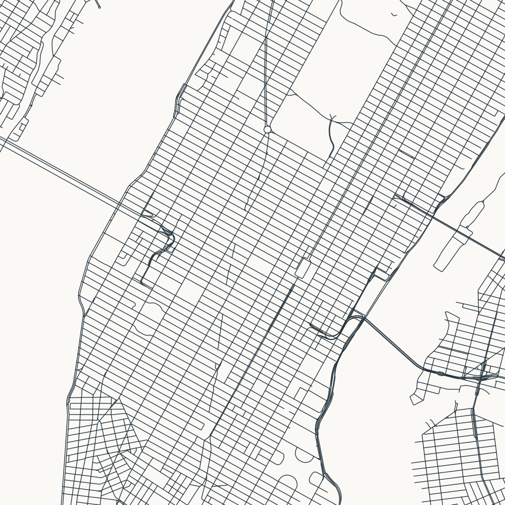
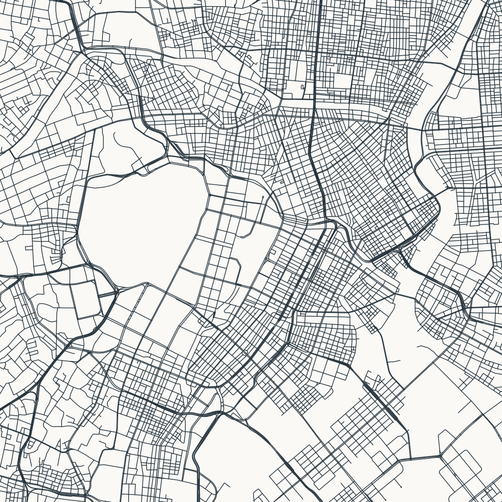
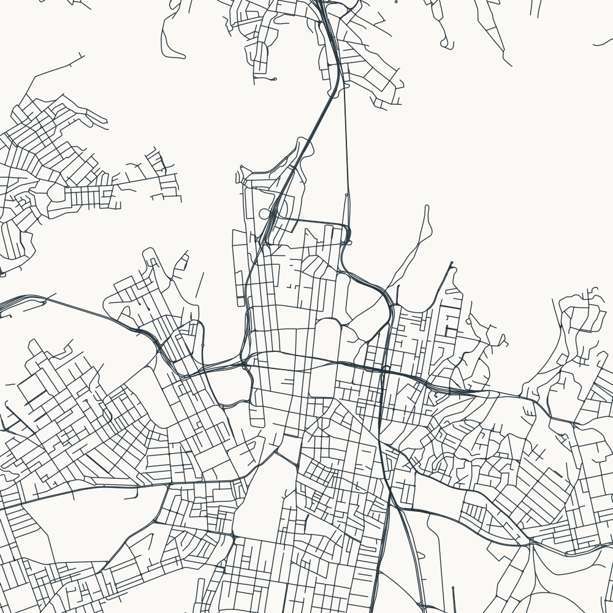

New York City

Midtown Manhattan: rotated grid, Broadway, and river gaps
Each square covers 6 × 6 km. North up; uniform line width; OSMnx network filter: drive.
Compare at desktop and phone widths: is the pattern readable, distinctive, and sufficiently centred? Blank areas are absence of included roads, not a water layer.

Midtown Manhattan: rotated grid, Broadway, and river gaps

Central Paris: radial avenues and irregular local streets

Eixample and the old city: contrasting street patterns

Tokyo Station: fine-grained streets and the Imperial Palace gap

Central Sydney: harbour gaps and changing grid directions
© OpenStreetMap contributors · Data retrieved during generation; see manifest.json.